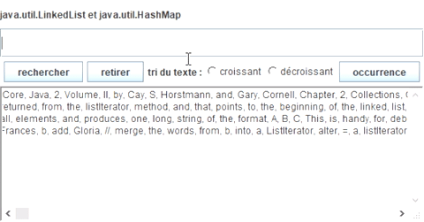
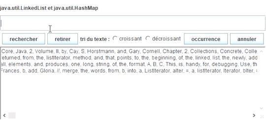

Classes abstraites, interface, héritage
- Le package java.util
- java.util.AbstractCollection
- java.util.AbstractSet
- java.util.Set
- java.util.TreeSet
- java.util.Vector
- java.util.HashMap
- Les interfaces
- Iterator
- Comparator
Lecture préalable :
- Les notes de cours
- Ce tutorial sur les collections
- Le chapitre 2 de ce livre
- Revoir également les classes internes (Nested Classes)
(L'énoncé de la question 1 est inspiré du tutorial d'Oracle sur les collections.)
- L'implémentation préconisée utilise par délégation une instance de la classe java.util.Vector<T>.
- Seule une méthode est à développer ici :
public boolean add(T t) - Cette méthode doit garantir la sémantique de l'ajout d'un élément dans un ensemble (au sens mathématique).
- Questions à se poser : Que se passe-t-il si on utilise this.add(...) dans cette méthode ? Et this.contains() ? Que déclenche la méthode addAll de la super-classe ?
 La classe Ensemble<T> (suite)
La classe Ensemble<T> (suite)

Aide au comportement attendu, une
interface graphique est disponible depuis votre répertoire

Ci-dessous un gif animé écrit par M. HAMZA Sadouk (NFP121-2019)
Attention chaque opération retourne un nouvel ensemble, comme le suggère cette signature de la méthode "union"public Ensemble<T> union( Ensemble<? extends T>e1) ...
Ensemble e = ...
System.out.println(" union de e et de e1 : " + e.union(e1));
voir les méthodes xxxAll spécifiées dans l'interface
java.util.Collection
(aucune boucle n'est nécessaire !, ce sera testé par jnews)
Dans la javadoc il est écrit, "... adds each object ..." signifie "... calls add() for each object ..." (pattern Template Method) Bien comprendre quelle méthode addAll et quelle méthode add sont appelées à chaque fois.
((e union e1) - (e inter e1))
On peut coder, (ce sera testé par jnews) cette méthode avec une seule instruction !
return ((e union e1) - (e inter e1)) ;
 Les tests unitaires (suite)
Les tests unitaires (suite)
 Les listes et dictionnaires
Les listes et dictionnaires
L'objectif est de pouvoir faire différents traitements sur cette liste de mots.
Complétez la classe Chapitre2CoreJava2 en développant ces deux méthodes de classe
- Obtention d'une liste de mots à partir de la constante CHAPITRE2.
public static List<String> listeDesMots()(utilisez une LinkedList) - Obtention d'une liste de couples <String,Integer>, à partir la liste des mots ci-dessus.
public static Map<String,Integer> occurrencesDesMots(List<String> listeDesMots)(utilisez une HashMap)
 la classe JPanelListe
la classe JPanelListe
- rechercher : recherche du mot tapé dans la zone de saisie; le booléen, le résultat de la recherche est affiché. la touche Entrée du clavier a le même effet qu'une action effectuée sur ce bouton.
- retirer : retrait de tous les mots commençant par le préfixe de la zone de saisie; le booléen, résultat du retrait est affiché.
- croissant : tri du texte selon cet ordre, utilisez Collections.sort.
- décroissant : proposer une classe interne implémentant l'interface Comparator.
- occurrence : obtention du nombre d'occurrences du mot présent dans la zone de saisie
Ci-dessous un gif animé écrit par M. HAMZA Sadouk (NFP121-2019)

ATTENTION le retrait d'un élément qui a déjà été présent dans la table retourne un nombre d'occurrences égal à zéro.
Demander le nombre d'occurrences d'un élément qui n'a jamais été présent dans la liste initiale doit retourner ???
 la classe JPanelListe2
la classe JPanelListe2
L'idée est de stocker l'état de la 'liste de String' à chaque action ('retirer' , 'croissant' , 'decroisssant') dans une Pile (java.util.Stack
ATTENTION de mettre à jour la table des occurrences. Pour la fonctionnalité annuler, Il est fortement encouragé d'utiliser le patron Memento, cette vidéo peut vous être utile.
Aide au comportement attendu, une
interface graphique est disponible depuis votre répertoire
Ci-dessous un gif animé écrit par M. HAMZA Sadouk (NFP121-2019)

Interface Factory<T>, l'implémentation de la méthode create est laissée aux "clients"
package question3;
public interface Factory<T> {
public T create();
}
public class TextFactory1 implements Factory<TextComponent> {
public TextComponent create() {
return new TextArea(100,50);
}
}
public class TextFactory2 implements Factory<TextComponent> {
public TextComponent create(){
return new TextField(40);
}
}
public void utilisation(Factory fabrique){
TextComponent tc = fabrique.create();
tc.setText( "essai" );
}
utilisation(new TextFactory1());
utilisation(new TextFactory2());